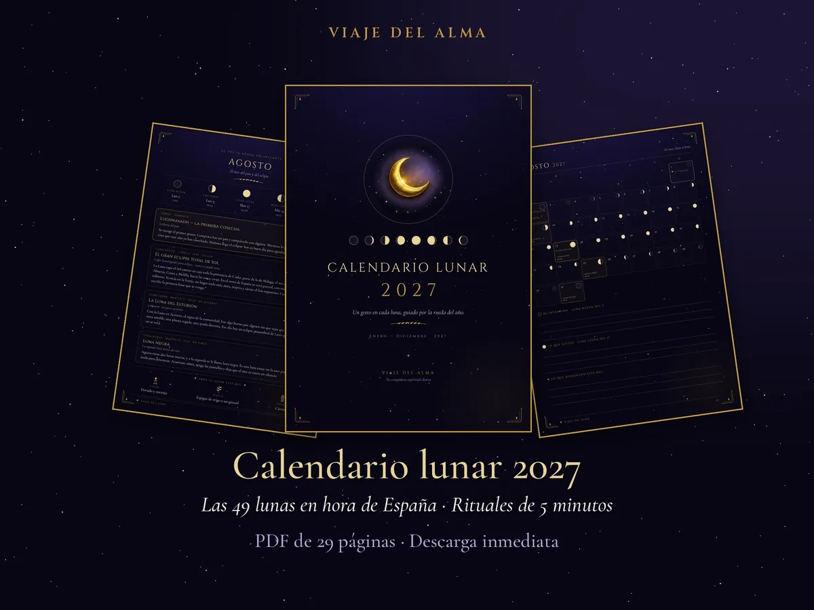
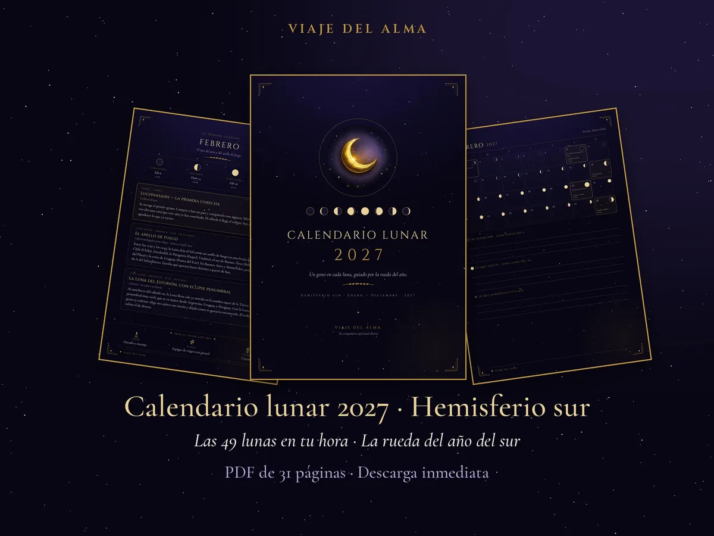
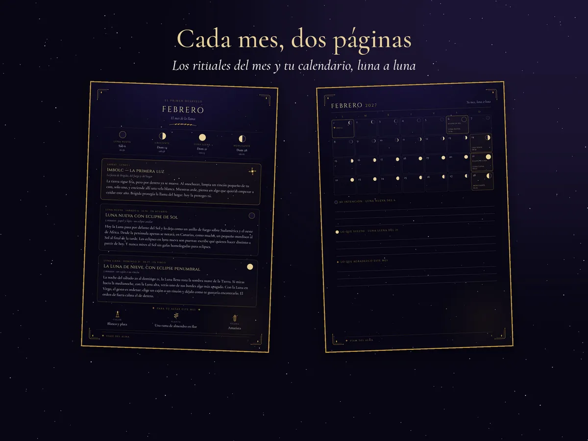
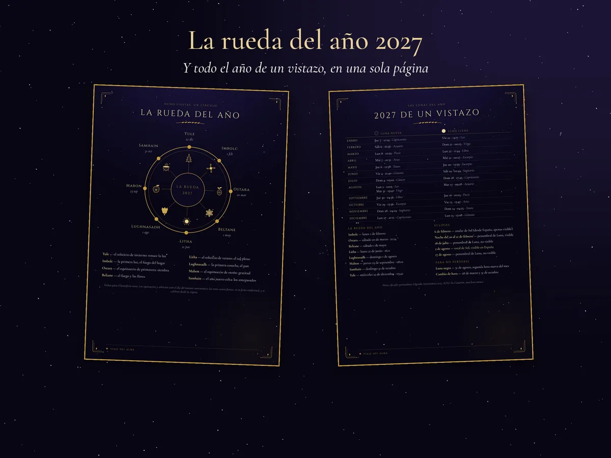
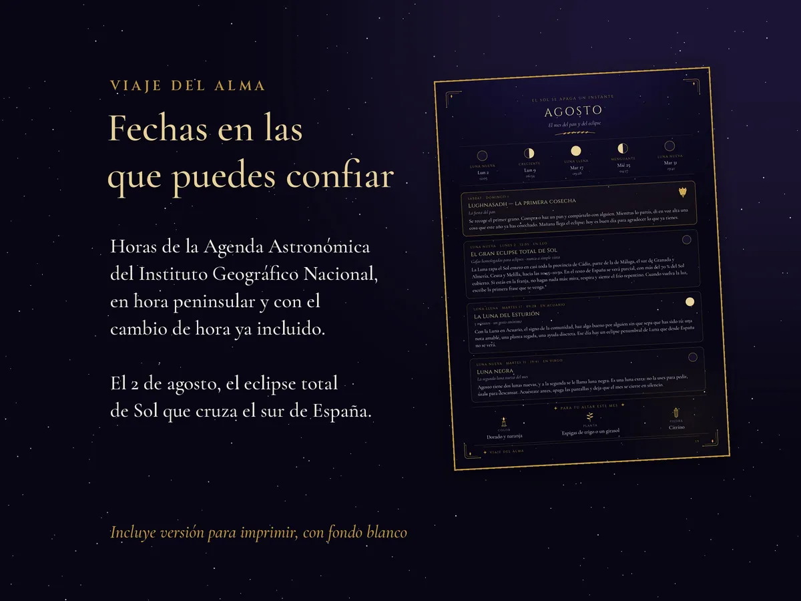
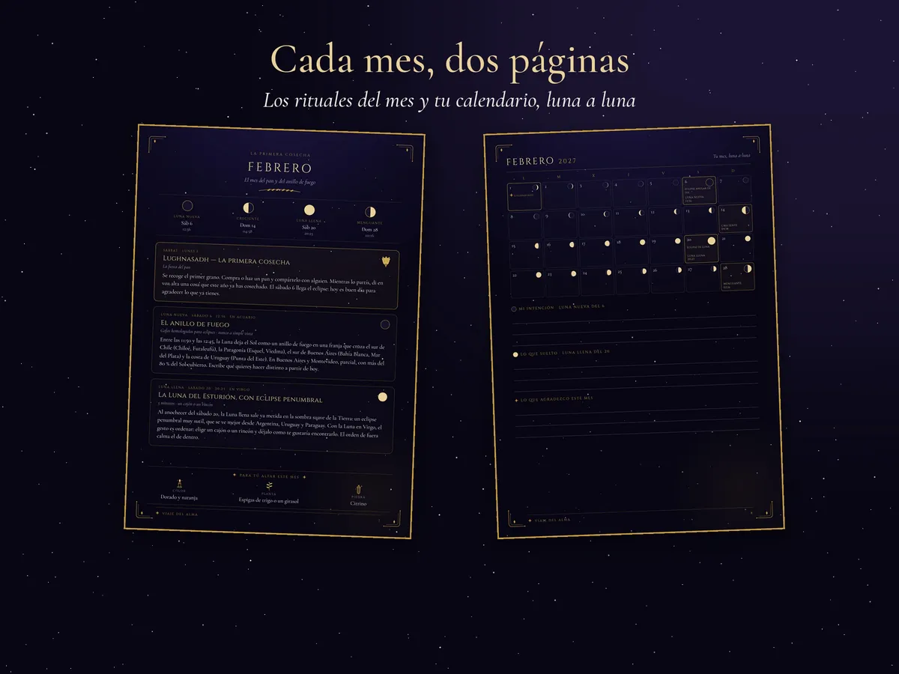
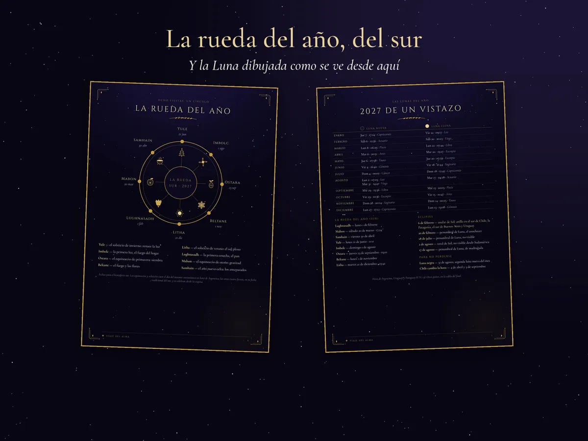
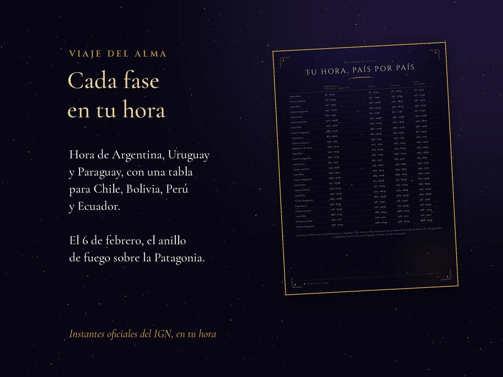
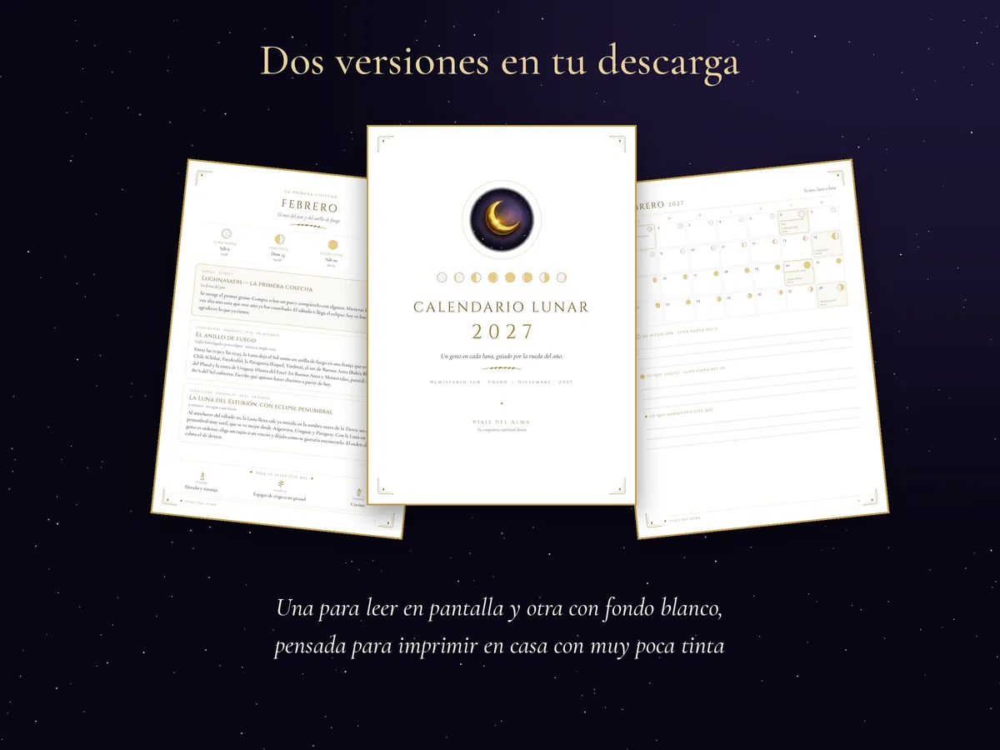

Calendario lunar 2027
Las 49 fases de la Luna de 2027 con su día, su hora y su signo, la rueda del año y un gesto sencillo para cada luna nueva, cada luna llena y cada sabbat. En PDF, para leer en el móvil y para imprimir.
España y el resto del hemisferio norte · horas de España
Argentina, Uruguay, Paraguay, Chile, Bolivia, Perú y Ecuador · horas de cada país


Edición hemisferio norte
Edición hemisferio sur
PDF de 29 páginas · versión pantalla y versión para imprimir PDF de 31 páginas · versión pantalla y versión para imprimirMarca la casilla para continuar.
¿Prefieres Etsy? También está en nuestra tienda de Etsynuestra tienda de Etsy.
Qué incluye
- Las 49 fases de la Luna de 2027, con día, hora y signo, en hora peninsular española y con el cambio de hora ya incluido. En Canarias, una hora menos.
- Las 8 fiestas de la rueda del año, de Imbolc a Yule, con la hora exacta de los equinoccios y los solsticios.
- Los 5 eclipses de 2027, entre ellos el eclipse total de Sol del 2 de agosto, que se verá en el sur de España.
- 12 meses con dos páginas cada uno: rituales sencillos para cada luna nueva, cada luna llena y cada sabbat, ideas para tu altar (color, planta y piedra) y tu mes luna a luna, con espacio para escribir tu intención, lo que sueltas y lo que agradeces.
- 2027 de un vistazo y la rueda del año, cada uno en una página, y un primer ritual de cinco minutos para empezar.
- Dos versiones en la descarga: una para leer en el móvil y otra con fondo blanco, pensada para imprimir en casa en A4 con muy poca tinta.
- Las 49 fases de la Luna de 2027, con día, hora y signo, en hora de Argentina, Uruguay y Paraguay.
- Una tabla con todas las fases en hora de Chile, Bolivia, Perú y Ecuador: a veces cambia hasta el día.
- Las 8 fiestas de la rueda del año del sur, con Samhain en abril, Yule en junio y Beltane en noviembre, y la hora exacta de los equinoccios y los solsticios.
- Los 5 eclipses de 2027, entre ellos el anillo de fuego del 6 de febrero, que cruza el sur de Chile, la Patagonia, el sur de Buenos Aires y la costa de Uruguay.
- 12 meses con dos páginas cada uno: rituales sencillos para cada luna nueva, cada luna llena y cada sabbat, ideas para tu altar (color, planta y piedra) y tu mes luna a luna, con espacio para escribir.
- La Luna dibujada como se ve desde el sur: la creciente se ilumina por la izquierda.
- Dos versiones en la descarga: una para leer en el móvil y otra con fondo blanco, pensada para imprimir en casa en A4 con muy poca tinta.







Pruébalo antes: lo que queda de 2026 y enero a abril de 2027, gratis
Pruébalo antes: enero a abril de 2027, gratis
Pruébalo antes: enero a abril de 2027, gratis
Déjanos tu correo y descarga ahora lo que queda de 2026 y los cuatro primeros meses de 2027, con sus rituales. Después te escribiremos en cada luna nueva y cada luna llena.
Déjanos tu correo y descarga ahora los cuatro primeros meses de 2027, con sus rituales. Después te escribiremos en cada luna nueva y cada luna llena.
Déjanos tu correo y descarga ahora los cuatro primeros meses de 2027, con sus rituales. Después te escribiremos en cada luna nueva y cada luna llena.
Te escribiremos con las lunas y las novedades de Viaje del Alma, a veces con alguna oferta. Te borras cuando quieras respondiendo «baja» a cualquier correo. Privacidad.
Fases lunares 2027: lunas nuevas y lunas llenas
Hora oficial peninsular española, con el cambio de hora incluido (28 de marzo y 31 de octubre). En Canarias, una hora menos.
Hora de Argentina, Uruguay y Paraguay. En el calendario tienes también Chile, Bolivia, Perú y Ecuador, y los cuartos crecientes y menguantes.
| Mes | Luna nueva | Luna llena |
|---|---|---|
| Enero | jue 7 · 21:24 | vie 22 · 13:17 |
| Febrero | sáb 6 · 16:56 | dom 21 · 00:23 |
| Marzo | lun 8 · 10:29 | lun 22 · 11:44 |
| Abril | mié 7 · 01:51 | mié 21 · 00:27 |
| Mayo | jue 6 · 12:58 | jue 20 · 12:59 |
| Junio | vie 4 · 21:40 | sáb 19 · 02:44 |
| Julio | dom 4 · 05:02 | dom 18 · 17:45 |
| Agosto | lun 2 · 12:05 mar 31 · 19:41 | mar 17 · 09:28 |
| Septiembre | jue 30 · 04:36 | jue 16 · 01:03 |
| Octubre | vie 29 · 15:36 | vie 15 · 15:47 |
| Noviembre | dom 28 · 04:24 | dom 14 · 04:25 |
| Diciembre | lun 27 · 21:12 | lun 13 · 17:08 |
| Mes | Luna nueva | Luna llena |
|---|---|---|
| Enero | jue 7 · 17:24 | vie 22 · 09:17 |
| Febrero | sáb 6 · 12:56 | sáb 20 · 20:23 |
| Marzo | lun 8 · 06:29 | lun 22 · 07:44 |
| Abril | mar 6 · 20:51 | mar 20 · 19:27 |
| Mayo | jue 6 · 07:58 | jue 20 · 07:59 |
| Junio | vie 4 · 16:40 | vie 18 · 21:44 |
| Julio | dom 4 · 00:02 | dom 18 · 12:45 |
| Agosto | lun 2 · 07:05 mar 31 · 14:41 | mar 17 · 04:28 |
| Septiembre | mié 29 · 23:36 | mié 15 · 20:03 |
| Octubre | vie 29 · 10:36 | vie 15 · 10:47 |
| Noviembre | dom 28 · 00:24 | dom 14 · 00:25 |
| Diciembre | lun 27 · 17:12 | lun 13 · 13:08 |
Fuente: Agenda Astronómica 2027 del Instituto Geográfico Nacional (Observatorio Astronómico Nacional), comprobada con dos cálculos astronómicos propios.
La rueda del año 2027
- Imbolclunes 1 de febrero
- Ostarasábado 20 de marzo, 21:24 · equinoccio de primavera
- Beltanesábado 1 de mayo
- Lithalunes 21 de junio, 16:11 · solsticio de verano
- Lughnasadhdomingo 1 de agosto
- Mabonjueves 23 de septiembre, 08:01 · equinoccio de otoño
- Samhaindomingo 31 de octubre
- Yulemiércoles 22 de diciembre, 03:42 · solsticio de invierno
- Lughnasadhlunes 1 de febrero
- Mabonsábado 20 de marzo, 17:24 · equinoccio de otoño
- Samhainviernes 30 de abril
- Yulelunes 21 de junio, 11:11 · solsticio de invierno
- Imbolcdomingo 1 de agosto
- Ostarajueves 23 de septiembre, 03:01 · equinoccio de primavera
- Beltanelunes 1 de noviembre
- Lithamartes 21 de diciembre, 23:42 · solsticio de verano
Los eclipses de 2027
- Sábado 6 de febrero · eclipse anular de Sol. Un anillo de fuego sobre Sudamérica y el oeste de África; desde casi toda la península no se verá, y en Canarias, como mucho, un pequeño mordisco al Sol al final de la tarde.
- Noche del sábado 20 al domingo 21 de febrero · eclipse penumbral de Luna. Hacia la medianoche, con la Luna alta, uno de sus bordes se verá algo más apagado.
- Domingo 18 de julio · eclipse penumbral de Luna, tan leve que desde España no se verá.
- Lunes 2 de agosto · eclipse total de Sol. Total en casi toda la provincia de Cádiz, parte de la de Málaga, el sur de Granada y Almería, Ceuta y Melilla, hacia las 10:45–10:50. En el resto de España, parcial, con más del 70 % del Sol cubierto. Nunca lo mires sin gafas homologadas para eclipses.
- Martes 17 de agosto · eclipse penumbral de Luna, que desde España no se verá.
- Sábado 6 de febrero · el anillo de fuego. Entre las 11:50 y las 12:45 (hora de Argentina y de Chile), la Luna deja el Sol como un anillo en una franja que cruza el sur de Chile (Chiloé, Futaleufú), la Patagonia (Esquel, Viedma), el sur de Buenos Aires (Bahía Blanca, Mar del Plata) y la costa de Uruguay (Punta del Este). En Buenos Aires y Montevideo, parcial, con más del 80 % del Sol cubierto. Nunca lo mires sin gafas homologadas para eclipses.
- Sábado 20 de febrero · eclipse penumbral de Luna. Al anochecer, la Luna llena sale ya en la sombra suave de la Tierra; se ve mejor desde Argentina, Uruguay y Paraguay.
- Domingo 18 de julio · eclipse penumbral de Luna, que no se verá.
- Lunes 2 de agosto · eclipse total de Sol en el sur de España, al otro lado del mundo: desde Sudamérica no se ve.
- Martes 17 de agosto · eclipse penumbral de Luna, muy leve.
Fechas en las que puedes confiar
Las horas de las fases, los equinoccios y los solsticios son las de la Agenda Astronómica 2027 del Instituto Geográfico Nacional. Además, las hemos comprobado con dos cálculos astronómicos propios, y un programa ha repasado cada fecha y cada hora del PDF ya terminado.
Son los instantes de la Agenda Astronómica 2027 del Instituto Geográfico Nacional de España, pasados a la hora de cada país, con el cambio de hora de Chile incluido. Además, los hemos comprobado con dos cálculos astronómicos propios, y un programa ha repasado cada fecha y cada hora del PDF ya terminado.
Los textos se han redactado con ayuda de inteligencia artificial y los hemos revisado antes de publicarlos.
Preguntas
¿Cómo lo recibo?
Al terminar el pago vuelves a esta web y descargas los dos PDF en el momento: el de pantalla y el de imprimir. Guarda esa página. Si algo falla, escríbenos a viajedelalma.app@gmail.com con el correo del pago y te lo enviamos.
¿Cuál elijo, el del norte o el del sur?
El del hemisferio donde vives. La Luna es la misma para todas, pero la rueda del año va al revés (cuando aquí es Samhain, allí es Beltane) y la luna creciente se ilumina por el otro lado. Si vives en México, Centroamérica, Colombia o Venezuela, tu rueda es la del norte, pero ten en cuenta que sus horas son las de España: en México, por ejemplo, son 7 horas menos en invierno y 8 en verano, y a veces cambia hasta el día.
¿Puedo imprimirlo?
Sí. La descarga trae una versión con fondo blanco, pensada para imprimir en casa en A4 con muy poca tinta. Puedes imprimirla para ti tantas veces como quieras.
¿Cómo se paga?
Pagas en la página de pago segura de Stripe, con los métodos que te muestre como disponibles. Nosotros no guardamos tus datos de pago.
¿Puedo regalarlo?
Es para uso personal: no se puede revender ni compartir el archivo. Si quieres regalarlo, cómpralo para esa persona y envíale tú la descarga. El regalo gratuito de la lista sí puedes compartirlo tal cual.
✦ Y cada día ✦
El ritual de cada día, marcado por la luna real, gratis en la app Viaje del Alma para Android.
Ver la appViaje del Alma · Privacidad · Términos · Carta natal gratis · Inicio